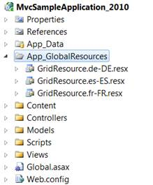

To enable localization feature using GridPropertiesModel:
1. Create a model in the application (Refer to Getting Started>Adding a Model to the Application).
2. Create a folder named App_GlobalResources in your application and create your own localization resource (.resx) file in this folder.

Figure 267: App_GlobalResource Folder
In order to create a new localization resource file, download the default localization file from the following location, rename it, and then use Visual Studio to edit the values.
The default English localization file is shown in the following screenshot:

Figure 268: Resource File For English Culture
 Note: The name of the localization file should be
in the format GridResource.[culture].resx. For example:
"GridLocalization.fr-FR.resx"
Note: The name of the localization file should be
in the format GridResource.[culture].resx. For example:
"GridLocalization.fr-FR.resx"
3. Add the following code in the Index.aspx file to create the Grid control in the view.
|
View [ASPX]
<%=Html.Syncfusion().Grid<Order>("Grid1","GridModel", columns => { })%>
|
|
View [cshtml] @(new HtmlString(Html.Syncfusion().Grid<Order>("Grid1","GridModel", columns => { }).ToString())) |
4. There are two ways to specify the culture information, namely:
· Setting the CurrentUICulture property of the CurrentThread inside your Action method.
|
[C#]
public ActionResult Index() }
|
· Creating a GridPropertiesModel in the Index method. Use the Localize property to specify the culture details:
|
[C#]
public ActionResult Index()
|
5. Run the application. The grid will appear as shown in the following screenshot:

Figure 269: Grid with French Localization
Customization
If you want to customize the localization resource files folder path use the LocalizationPath property.
|
[C#]
public ActionResult Index() LocalizationPath="~/App_LocalResources"// Specify the folder path. };
|
Tables for Properties, Methods, and Events
Properties
|
Property |
Description |
Type |
Data type |
Reference links |
|
Localize |
Get or set the localization culture of Grid |
Server side |
A string containing the name of the target System.Globalization.CultureInfo |
NA |
|
LocalizationPath |
Get or set the localization resource path of the resource file location |
Server side |
Any string value. Default: “~/App_GlobalResources” |
Localize |
Methods
|
Method |
Description |
Parameters |
Type |
Return Type |
Reference links |
|
Localize |
Used to specify the localization culture of grid. |
(string culture) |
Server-side |
Void |
NA |
|
LocalizationPath |
Used to configure the localization resource file path |
(string path) |
Server-side |
Void |
Localize |
Sample Link
To view the samples:
1. Open the ASP.NET MVC Sample Browser from the dashboard. (Refer to the Samples and Location chapter)
2. Navigate to Grid>Localization demo.